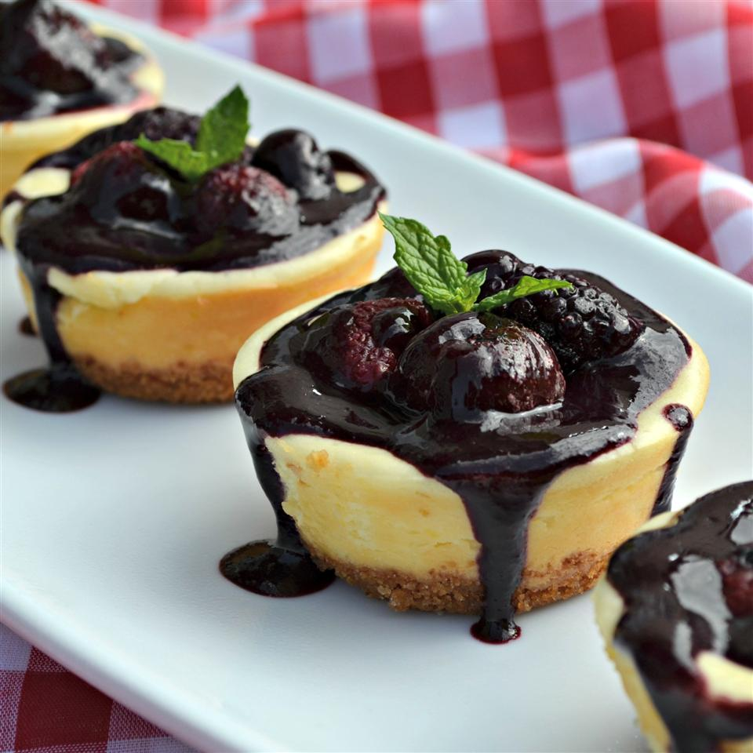

Mini Cheesecakes

Description
This is a delicious recipe that is perfect for an on-the-go snack. Plus it is a great treat for kids.
Ingredients
- Crust:
- One third cup graham cracker crumbs
- 1 tablespoon white sugar
- 1 tablespoon margarine, melted
- Fillng:
- (8 ounce) package cream cheese, softened
- One fourth cup white sugar
- 1.5 teaspoons lemon juices
- Half teaspoons grated lemon zest
- One fourth teaspoon vanilla extract
- 1 egg
Steps
- Preheat oven to 325 degrees F (165 degrees C). Grease a 6-cup muffin pan.
- In a medium bowl, mix together the graham cracker crumbs, sugar, and margarine with a fork until combined. Measure a rounded tablespoon of the mixture into the bottom of each muffin cup, pressing firmly. Bake in the pre-heated oven for 5 minutes, then remove to cool. Keep the oven on.
- Beat together the cream cheese, sugar, lemon juice, lemon zest and vanilla until fluffy. Mix in the egg.
- Pour the cream cheese mixture into the muffin cups, filling each until 3/4 full. Bake at 325 degrees F (165 degrees C) for 25 minutes. Cool completely in pan before removing. Refrigerate until ready to serve.
Nutrition Facts
Per Serving: 219 calories; protein 4.2g; carbohydrates 15.2g; fat 16.1g; cholesterol 72.1mg; sodium 171.1mg.